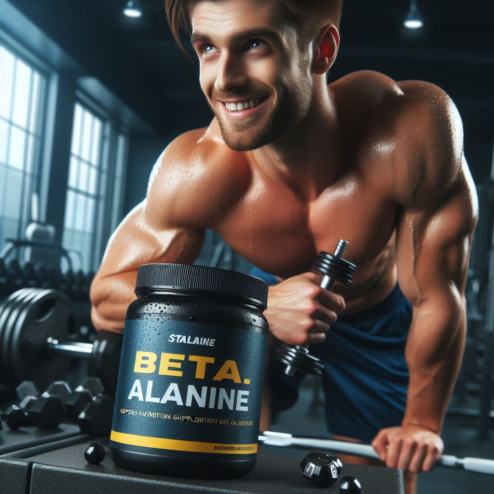

Бета-аланин
Бета-аланин — это аминокислота, которая играет важную роль в синтезе карнозина в организме. Карнозин, в свою очередь, является ключевым веществом, помогающим бороться с мышечной усталостью и повышать выносливость при интенсивных физических нагрузках. Давайте разберемся, что это такое и какие плюсы он может принести:
1) Польза бета-аланина:
- Увеличение выносливости: Бета-аланин помогает отодвинуть наступление мышечной усталости, что позволяет вам дольше сохранять работоспособность во время тренировок.
- Повышение интенсивности и объема тренировок: Благодаря буферной функции карнозина, бета-аланин позволяет увеличить интенсивность и продолжительность тренировок.
- Улучшение силовых показателей: При регулярном приеме бета-аланина можно ожидать улучшения силовых результатов.
2) Как принимать бета-аланин:
- Принимайте бета-аланин вместе с едой или специальными углеводными напитками.
- Распределяйте суточную дозу на 2-3 приема с интервалом в несколько часов.
- Запивайте бета-аланин фруктовыми соками, а не простой водой.
- Принимайте бета-аланин в комбинации с креатином для усиления эффекта.
Важно! Если вы планируете включить бета-аланин в свой рацион, обязательно проконсультируйтесь с врачом и тренером, чтобы выбрать подходящий продукт и дозировку. Помните, что индивидуальные потребности могут различаться, и важно следовать рекомендациям специалистов.
Теперь вы знаете больше о бета-аланине! Если вас заинтересовал данный продукт, переходите по кнопке "Просмотр продукции" и подбирайте товар для себя!